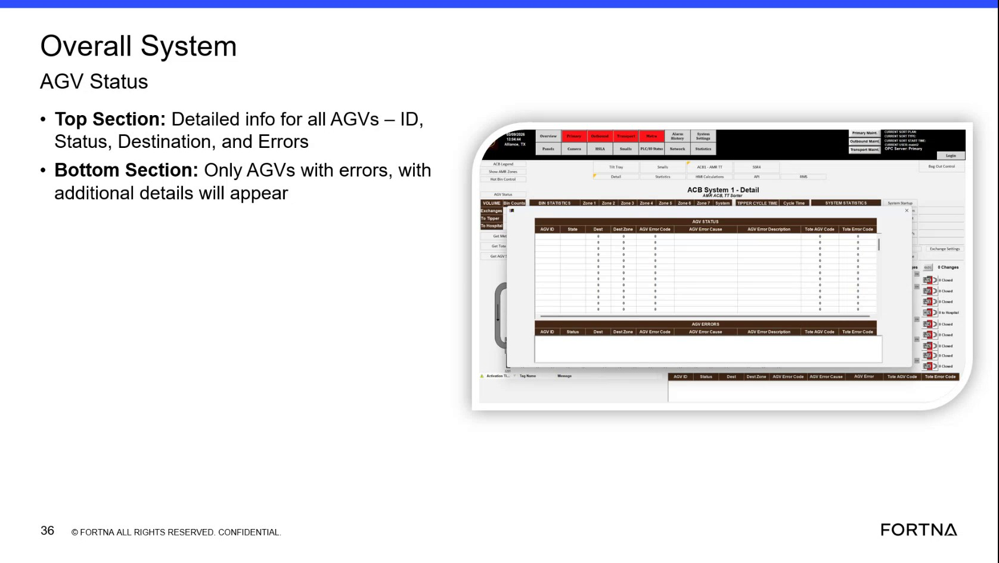

| Procedure ID | proc_review_overall_system_agv_status_popup_for_fleet_status_and_errors_v1 |
|---|---|
| Title | Review Overall System AGV Status Popup For Fleet Status And Errors |
| Procedure Type | diagnostic |
| Primary Role | L1_support |
| Support Safe | Yes |
| Validation Status | needs_sme_review |
| Merge Status | source_finalized |
Use the Overall System AGV Status popup to review fleet-wide AGV information. The source indicates the top section shows detailed information for all AGVs, including ID, Status, Destination, and Errors, while the bottom section shows only AGVs with errors and additional detail.
Use when reviewing current AGV fleet status on the HMI and when identifying which AGVs show errors and additional error detail on the Overall System AGV Status popup.
Responsible role: L1_support
Instruction:
Open or view the 'Overall System AGV Status' popup on the HMI.
Expected result:
The Overall System AGV Status popup is visible.
Screens / Images:

Stop or Escalate If:
Responsible role: L1_support
Instruction:
In the top section, review the listed AGV information fields for all AGVs: ID, Status, Destination, and Errors.
Expected result:
The top section shows the standard AGV information fields for all AGVs.
Screens / Images:
Stop or Escalate If:
Responsible role: L1_support
Instruction:
Check each AGV entry to identify the reported status, destination, and whether an error is shown.
Expected result:
Each AGV entry has been reviewed for status, destination, and error indication.
Screens / Images:
Stop or Escalate If:
Responsible role: L1_support
Instruction:
In the bottom section, look for AGVs that appear with errors and review the additional detail shown for those AGVs.
Expected result:
AGVs with errors are identified in the bottom section and their additional detail is visible.
Screens / Images:
Stop or Escalate If:
Responsible role: L1_support
Instruction:
Record which AGVs are listed with errors and the associated status, destination, and error details shown on the popup.
Expected result:
A record exists of the AGVs shown with errors and the details visible on the popup.
Screens / Images:
Stop or Escalate If: